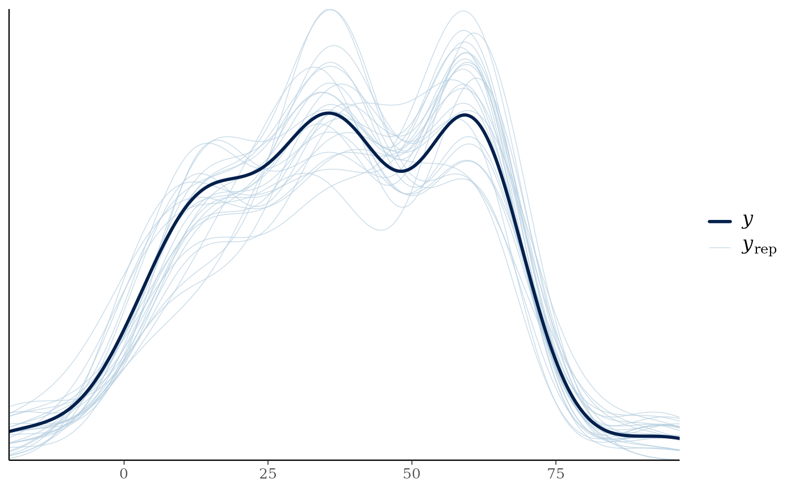

Graphical Posterior Predictive Checks for Stanfit Objects
Source:R/S7-stanfit-postprocess.R
pp_check.MVBU_Stanfit.RdPerforms posterior predictive checks using bayesplot's
ppc_dens_overlay or related functions on an
MVBU_Stanfit model object.
Usage
# S3 method for class 'MVBU_Stanfit'
pp_check(object, type = "dens_overlay", ndraws = 50, ...)Arguments
- object
An
MVBU_Stanfitobject.- type
Character string giving the type of bayesplot plot to create (e.g.,
"dens_overlay","hist","stat","bars","error_hist"). Default:"dens_overlay".- ndraws
Positive integer; number of posterior draws to overlay. Default:
50.- ...
Additional arguments passed to the underlying bayesplot plotting function.
Value
A ggplot object returned by bayesplot.
Examples
# \donttest{
fit <- example_ideal_adaptor_stanfit()
#> Warning: The largest R-hat is NA, indicating chains have not mixed.
#> Running the chains for more iterations may help. See
#> https://mc-stan.org/misc/warnings.html#r-hat
#> Warning: Bulk Effective Samples Size (ESS) is too low, indicating posterior means and medians may be unreliable.
#> Running the chains for more iterations may help. See
#> https://mc-stan.org/misc/warnings.html#bulk-ess
#> Warning: Tail Effective Samples Size (ESS) is too low, indicating posterior variances and tail quantiles may be unreliable.
#> Running the chains for more iterations may help. See
#> https://mc-stan.org/misc/warnings.html#tail-ess
pp_check(fit, type = "dens_overlay")

# }